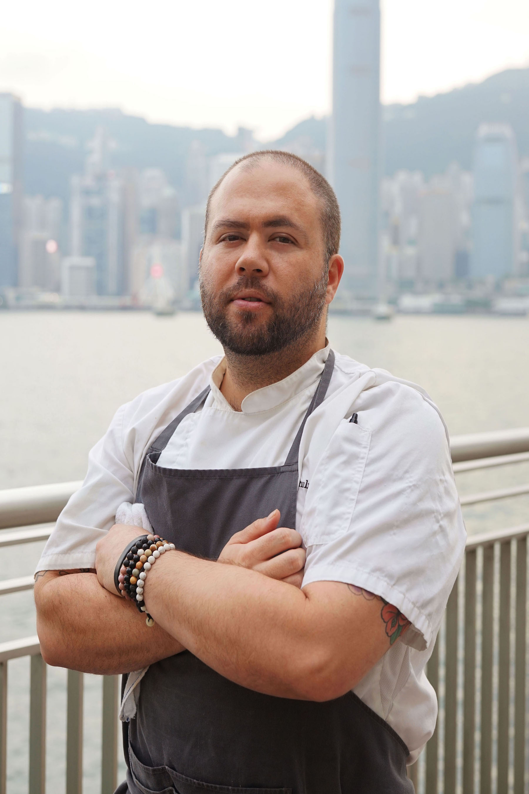
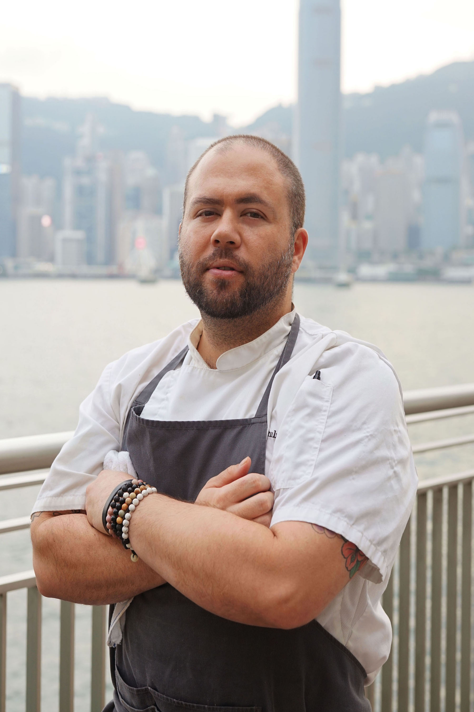

Dining Concepts is an F&B group that was established in 2002 that operates more than 25 well-known restaurants and many of Hong Kong's top cocktail bars. They manage and operate the chain of Gordon Ramsay Group restaurants in Hong Kong, including Bread Street Kitchen, London House and maze Grill. They also work with celebrity chefs Laurent Tourondel to open BLT Steak and BLT Burger, and Will Meyrick for Mama San. The list of restaurants goes on but they are even more notable for their success in opening Cocktail Bars & Lounges.
Dining Concepts has collaborated with interior designer Ashley Sutton to come up with world renowned concepts such as Iron Fairies Hong Kong, J.Boroski, Ophelia, Dragonfly and Dear Lilly, to name a few. Winning awards year after year for their unique bar concepts and service, Dining Concepts delivers a well rounded experience that is hard to find anywhere else.
Over my time there, I worked a lot with franchised restaurants before focusing on Nightlife experiences. Within marketing, I worked on event management such as organizing Masterclasses, anniversary parties, workshops and Restaurant Week as well as other marketing obligations such as managing partnerships with Restaurant Booking systems (Chope, Openrice and Dining City), handling promotions, special menus and overall relationship building with media and KOL. Alongside with my daily duties, I was given the opportunity to explore the areas I wanted to grow in, specifically in photography and video production.
Restaurant Instagram Pages:
Some photos were also used for magazine ads, online articles, social media, newsletters, and PR.
>•You may find more of my photography here•<


 
